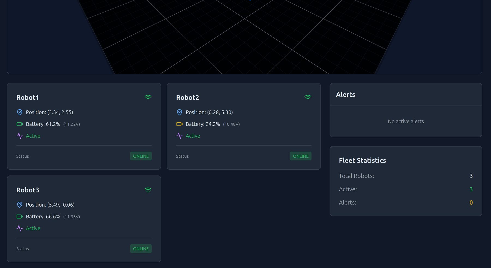
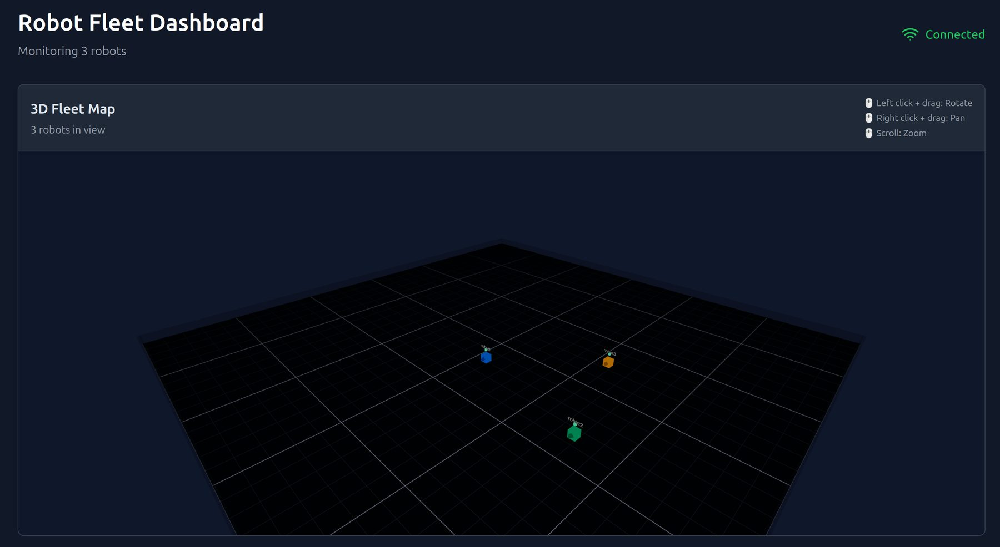

Overview
A ROS 2-to-web bridge for monitoring a robot fleet. A FastAPI backend runs an rclpy node that subscribes to each
robot's odometry and battery topics and pushes updates over WebSocket to a React dashboard with a Three.js 3D map,
robot status cards and low-battery alerts. Tested with 3 simulated robots publishing odometry at 10 Hz.
Specifications
10 Hz
Simulated Odometry Rate
Architecture
ROS 2 Side
- A simulator script runs 3 robot nodes, each publishing
nav_msgs/Odometry and sensor_msgs/BatteryState
- The backend's rclpy node subscribes to both topics per robot and raises a low-battery alert below 20%
Backend
- Framework: FastAPI with the rclpy node in the same process
- REST:
/api/robots and /api/status
- Real-time: a WebSocket endpoint (
/ws) broadcasting robot state and alerts to every connected client
Frontend
- Framework: React 18 with Vite
- 3D map: Three.js through React Three Fiber, with orbit controls
- State: Zustand store fed by a WebSocket hook that reconnects automatically
- Styling: Tailwind CSS

Three.js 3D map showing robot positions with live updates
Features
- Robot status cards: position, battery level (green above 50%, yellow above 20%, red below) and online status
- Alert panel with severity levels, including automatic low-battery alerts
- Fleet statistics: total robots, active robots and alert count
Limitations
- Simulated robots only; no persistence (state lives in memory)
- Runs locally; an earlier cloud demo is offline
Technology Stack
Python, ROS 2 (rclpy), FastAPI, WebSocket, React 18, Vite,
Three.js, React Three Fiber, Zustand, Tailwind CSS
Future Development
- Real robot integration: connect physical robots (e.g. the quadruped) for live monitoring
- Command interface: send goals to robots from the dashboard
- History: store telemetry and plot battery drain and movement over time